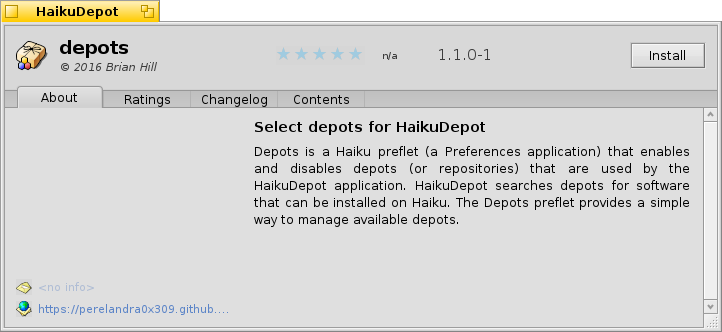
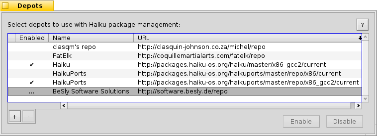

Depots
Depots for Haiku
Download the latest DepotsPerelandra0x309/depots/releases/latest
View the Project on GitHub Perelandra0x309/depots
Download Haiku Nightlyhttp://download.haiku-os.org/nightly-images/x86_gcc2_hybrid/
What is Depots?
Depots is a Haiku preflet (a Preferences application) that enables and disables depots (or repositories) that are used by the HaikuDepots application. HaikuDepots searches depots for software that can be installed on Haiku. The Depots preflet provides a simple way to manage available depots.
Installing Depots
Installing is very simple by downloading the latest release file ending with ".hpgk". Open the downloaded file and you will see a description of the package and a button to complete the installation.

An alternate install method is using the HaikuDepot application included in the Haiku Nightly images. Search for "Depots", select it in the list and click the "Install" button.

When a new version of Depots is released the Haiku package manager will update the Depots package.
How To Use Depots
The Depots preflet will show a list of all known depots and whether each is currently enabed or not. When a depot is enabled then any packages stored on that depot will be displayed in the HaikuDepot application and pacakges can be updated using the "pkgman" command. Here is what the Depots preflet will look like with some depots enabled:
To add a new depot to the list, click on the "+" button at the bottom left of the list. You will need to know the URL of the depot and type or paste that into the text area:
When you add a new depot the name of it will be displayed as "Unknown". Once you enable the depot the name will become the name that the server identifies itself as.
If you wish to remove a depot from the list, select it then click the "-" button. A depot must not be enabled to be removeable.
To enable or disable a depot, select it in the list then click the appropriate button on the bottom right, either "Enable" or "Disable". A window with a progress bar will appear showing the status of the enable or disable task. This may take a few seconds but once completed the window will disappear and the list will be updated with the new enabled status of the depot:

It is possible to enable, disable and remove multiple depots at once. Select mutiple depots in the list using either the SHIFT or CTRL key. To enable or remove multiple depots all the selected ones must be disabled. To disable multiple depots all the selected ones must be enabled. The buttons will be dithered out for those tasks which are not possible to perform for the selected depots.
You may add multiple unique URLs that point to the same depot server. For example you might have a URL for the "current" packages, and other URLs for specific release versions. However only one URL from each depot server can be enabled at any one time. If you enable a URL for a depot the already has another URL enabled, the enabled URL will be disabled and the one you selected will be enabled.
Authors and Contributors
Copyright 2016, written by Brian Hill(@Perelandra0x309)
Support or Contact
Issues may be logged on the project's Issues page.